Reproduction report · In progress
Reproducing VGB: Taming Imperfect Process Verifiers
Reproducing Rohatgi, Shetty, Saless, Li, Moitra, Risteski & Foster, “Taming Imperfect Process Verifiers: A Sampling Perspective on Backtracking,” arXiv:2510.03149.
No official code has been released for this paper. I implemented VGB, the paper's stochastic-backtracking generalization of the Sinclair–Jerrum random walk, from the algorithm specification and appendix pseudocode, and reproduced its five experimental tasks. This page covers the method, each task's setup (including my own choices where the paper is underspecified), and how my results compare with the paper's.
Paper overview
If the true value function guiding generation were known exactly, sampling from the target distribution would be easy with action-level rejection sampling (ActionLevelRS). In practice only an approximate value function V̂ is available, fit by regression on Monte Carlo rollouts. The paper shows that ActionLevelRS with an approximate V̂ amplifies errors across the generation horizon H: small value errors compound token by token, because every step commits irrevocably to the token it picked.
VGB's fix is to let generation backtrack, undoing a bad token instead of staying stuck downstream of it. The paper proves this prevents the error amplification (Theorems 4.1–4.2) and validates it on five constrained-sampling tasks.
The VGB random walk
VGB is a lazy random walk on the tree of partial generations. From any node it stays put with probability 1/2 (laziness, so the chain has a stationary distribution). Otherwise it moves to a neighbor: it extends to a child with probability proportional to πref(next token)·V̂(extended sequence), or backtracks to the parent with probability proportional to V̂(current sequence).
- Input: base model πref, approximate value function V̂, prompt x, horizon H. If an outcome-level reward is available, set V̂(x, y1:H) := r⋆(x, y1:H).
- Initialize y(0) := ∅ and t = 0.
- while |y(t)| < H do
- Set h := |y(t)|.
- Define p(t) over the neighborhood of y(t)1:h: Backtrack to y1:h−1 with weight ∝ V̂(x, y1:h) if h > 0, else 0. Extend with yh+1 ∈ A with weight ∝ πref(yh+1 | x, y1:h) · V̂(x, y1:h, yh+1) if h < H, else 0.
- Sample y(t+1) ~ p(t) and increment t.
- return y(t).
For tasks with a large action space (Python test cases, letter avoidance), step 5 is not computed explicitly. Instead K = 32 candidate tokens are sampled from πref and the move is chosen among them by implicit rejection sampling (the paper's Algorithm 8).
Results at a glance
| Task | Status | What the reproduction shows |
|---|---|---|
| ABC | Reproduced | ActionLevelRS's KL to π⋆ grows faster with H than VGB's, as the paper predicts. At N = 10,000 and H ≤ 6 the two are statistically indistinguishable, and ActionLevelRS is cheaper. |
| Parity | Reproduced | Once V̂ is trained, VGB beats ActionLevelRS on wall-clock time and step count. For K = 4 the order reverses early in training. Value-function error stays near 0.5 at the hard parity positions. |
| Dyck grammar | Reproduced | VGB and VGB-Momentum lie beyond the Block BoN / Block RS accuracy–diversity frontier. VGB tracks π⋆ most closely in aggregate, at a higher step count. |
| Python test cases | In progress | Implementation and training details still being finalized. |
| Letter avoidance | Preliminary | First figures are in. Write-up of the win-rate aggregation and the ActionLevelRS restart heuristic is pending. |
1. ABC task Reproduced
Task. Alphabet {a, b, c}. The base model is uniform over all length-H sequences and the reward is 1 only if every token is “a” or “b”, so π⋆ is uniform over {a, b}H. This instantiates the paper's Example 3.1, the “benign perturbation” failure mode: there is no computational obstacle to learning the value function, so it isolates the effect of ordinary training error. The true value function is V⋆(y1:h) = (2/3)H−h·𝟙[c ∉ y1:h]. The paper's theory inflates V̂ by (1+εV) whenever the last token is “a” and proves ActionLevelRS's TV error then grows like √H. The question here is whether the same compounding appears with a real trained V̂.
Setup. πref draws a, b, c independently with probability 1/3. The value function is a one-hidden-layer MLP (width 128) on one-hot inputs, trained separately for each position h = 1…H−1 (position H uses the true reward). Adam, learning rate 0.01, binary cross-entropy, 100 steps, for N ∈ {500, 1000, 10000} rollouts and H ∈ {5, …, 10}.
What is measured. Both algorithms use the true reward at the final position, so every sample has reward 1. What can still differ is the distribution within that reward-1 set.
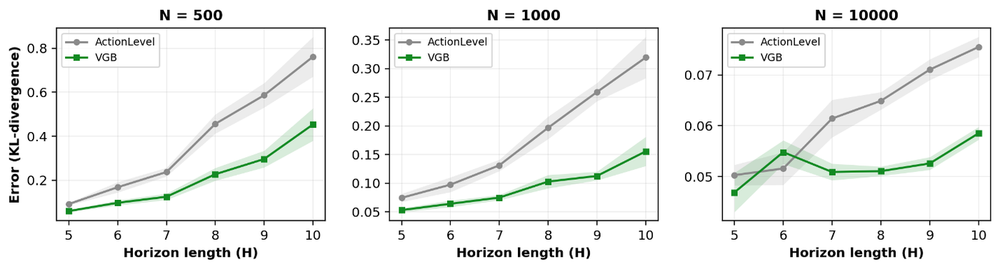
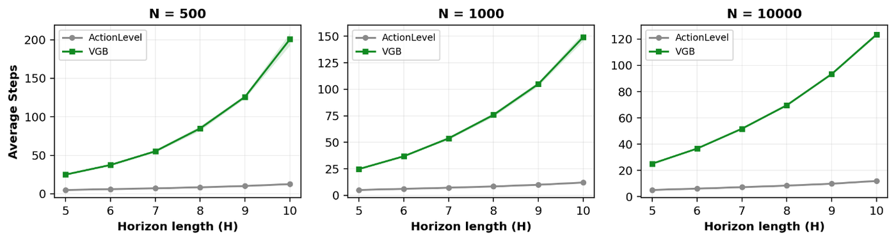
Analysis. In all three training-sample settings, ActionLevelRS's KL divergence rises more steeply with H than VGB's. This matches the paper's claim that error compounds more severely for ActionLevelRS over longer horizons, while VGB's backtracking limits the accumulation. More training data makes V̂ more accurate and lowers KL for both algorithms. For VGB, a better V̂ also means fewer wrong turns, so it backtracks less and its step count drops.
At N = 10,000 and H = 5, 6 the confidence intervals overlap, so the KL gap is not significant there, while ActionLevelRS uses fewer steps. When V̂ is already accurate and the horizon is short, backtracking buys little accuracy and still costs computation, so ActionLevelRS can be the better accuracy–compute trade-off.
2. Parity task Reproduced
Task. Horizon H = K·M (M blocks of K bits), alphabet {0, 1}. At positions h ≡ K−1 (mod K) the true value depends on the parity of the previous K−1 bits, which is notoriously hard for gradient descent to learn. Positions h ≡ 0 (mod K) reveal the answer exactly. This is the paper's Example 3.2, the “delayed feedback” failure mode, where the difficulty sits in training the value function itself.
Setup. A separate MLP per position h = 1…H−1 (Linear → ReLU → Linear → Sigmoid, width 128, one-hot inputs). Each is trained by Monte Carlo regression: draw y1:H ~ πref, compute r(y1:H), and regress every prefix y1:h onto that reward, so one rollout gives one example per position. Adam (lr 0.001), batch 128, MSE, one epoch of 10,000 batches (1.28M rollouts), checkpointed every 1,000 batches. Swept K ∈ {4, 5} × M ∈ {8, 9, 10}.
Experiment 1: efficiency (Figures 6–7). Across checkpoints, measure the wall-clock time, step count and timeout rate needed to find one reward-1 response. VGB keeps walking the same tree until it reaches a reward-1 leaf. ActionLevelRS has no recovery and restarts whenever every candidate has zero weight (“stuck”). 100 samples per algorithm per checkpoint, 60-second timeout; timed-out samples are excluded from time and step statistics and counted separately.
Experiment 2: diagnosing the gap (Figure 8). For K = 5, M = 8 (H = 40), at positions h ≡ K−1 and h ≡ 0 (mod K), take 100 roll-ins from π⋆ and compute V̂(wrong) / (V̂(correct) + V̂(wrong)): the probability ActionLevelRS picks the wrong token there, tracked over training.
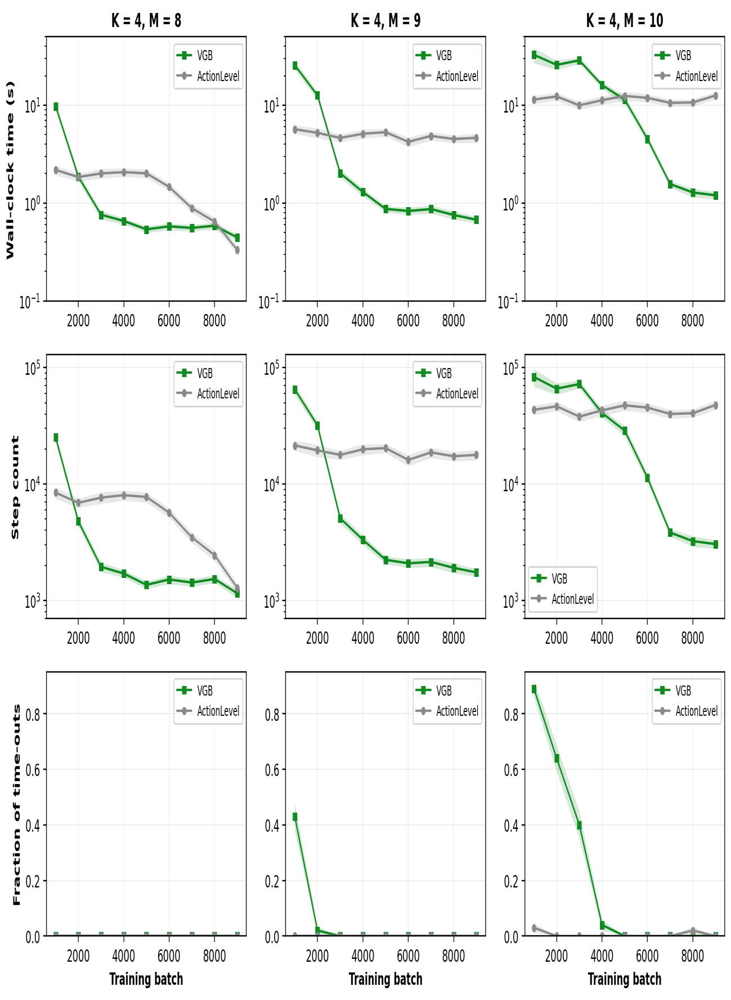
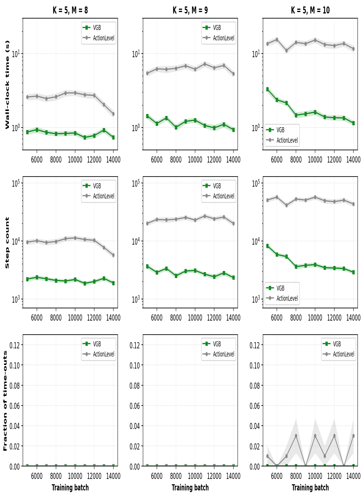
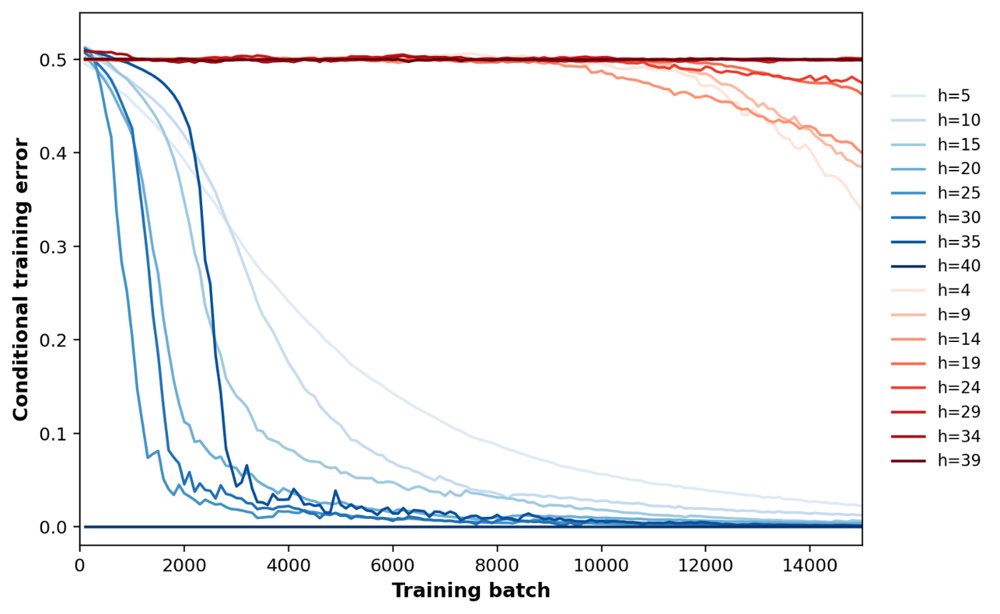
Analysis. With a well-trained V̂ (Figure 6), VGB beats ActionLevelRS on both wall-clock time and step count. Early in training the order reverses: ActionLevelRS is faster and VGB times out more. Larger M raises cost overall and delays VGB's crossover. The full M = 9 trajectory has the shape of roughly the first 5,000 batches of M = 8, and M = 10 the shape of the first 3,000. The similarity is in the trend, not the absolute values. Within the same training budget the harder settings have not reached the regime where VGB's advantage shows, and would likely trace a similar shape with more training.
With K = 5 (Figure 7) there is no early reversal: VGB is more efficient at every checkpoint, ActionLevelRS times out at a nonzero rate (especially at M = 10), and VGB essentially never does. Together with Figure 6, VGB's advantage appears earlier and holds more consistently as the horizon grows.
Figure 8 shows where ActionLevelRS fails. Every h ≡ 0 (mod K) curve (blue) converges to near-zero error. Every h ≡ K−1 (mod K) curve (red) except h = 4 stays near 0.5, no better than guessing. At h ≡ 0, πref already assigns zero probability to the wrong bit, so V̂ only needs a single-bit check. At h ≡ K−1 the right choice is the XOR of the preceding K−1 bits, which SGD struggles to learn for the usual parity-learning reasons.
Within each group, position has opposite effects. Among easy positions, later blocks converge fastest: conditional on success so far, the choice of yh changes the expected reward by 2t−M (t = block index), which is tiny early and close to 1 late, so late labels are far more informative. Among hard positions, later blocks converge more slowly, if at all, consistent with the relevant K−1 bits becoming harder to pick out of a longer, mostly irrelevant prefix. (h = H is excluded because the true reward is used there.)
3. Dyck grammar task Reproduced
Task. Generate balanced strings over two bracket types: [()] is valid, ([)] is not. Vocabulary of 8 tokens {(, ), [, ], B, E, P, S} with Begin/End markers and two unused placeholders. πref is a Transformer trained from scratch on valid strings, with a deliberate bias toward square brackets (open [ with probability 0.8, ( with 0.2). It is nearly perfect in distribution but much weaker on out-of-distribution prefixes dominated by round brackets, which is where the value functions are trained and evaluated.
Base model. 300,000 valid length-32 strings from a stack-based generator: open when the stack is empty, otherwise open or close with equal probability, and force closes when remaining length equals stack depth. Maximum depth 12, following Botta et al. Transformer with embedding 512, 6 layers, 8 heads; next-token prediction with Adam (lr 3×10−4), batch 32, weight decay 0.1, 100 warmup steps.
Value functions. From a fixed length-17 OOD prefix, πref generates 10,000 rollouts of 17 more tokens; reward 1 if all 32 tokens form a valid string. One MLP per response position h = 1…17: one-hot inputs, Adam (lr 0.003), weight decay 0.1, batch 32, MSE, 40 epochs.
Baselines. Block Best-of-N generates B candidate blocks of length L from πref and keeps the one with the highest V̂, for a budget of about B·H. Block Rejection Sampling uses the same candidates but samples one in proportion to V̂, keeping more diversity. VGB-Momentum gives each node a direction (descending v+ or ascending v−), with Qup(v) = V̂(v) and Qdown(v) = Σc πref(c | v)V̂(c). Transition weights combine the child weights, a stay weight ∝ min(Qup, Qdown) and a direction-change weight set by their difference, so the walk persists in one direction instead of choosing up or down afresh each step.
Experiment 1: accuracy vs. diversity (Figures 9–12). Fixed OOD prefix B((()(((((((()(((. At value-function epochs {1, 2, 3, 5, 10, 40}, each method generates 3,000 completions. The true reward is not used at the final position, so accuracy is a real metric. Block methods sweep L ∈ {1, 2, 4, 8, 16} × B ∈ {2, 4, 8, 16, 32} to trace a Pareto frontier. Diversity is the number of distinct correct completions. For reference, the paper's πref baseline gets accuracy 0.028 with 43 distinct correct completions; mine gets 0.040 with 66.
Experiment 2: distributional comparison (Figure 13, Table 3). 12 OOD prefixes whose base-model accuracy is between 1% and 10%, drawn from a strongly shifted generator (P(open) = 0.65, P(“(”) = 0.95 when opening) and screened with 3,000 πref rollouts each. Per prefix, 10,000 OutcomeLevelRS samples approximate π⋆ and 10,000 πref rollouts train 17 value MLPs. VGB, VGB-Momentum and ActionLevelRS each draw 1,000 reward-1 samples at epochs {1, 2, 5, 10, 40}, with the true reward at the last position and restarts for ActionLevelRS. Metrics are L1 error between open-bracket-position histograms and π⋆'s (direct KL is unreliable over 817 sequences with 1,000 samples), and average step count.
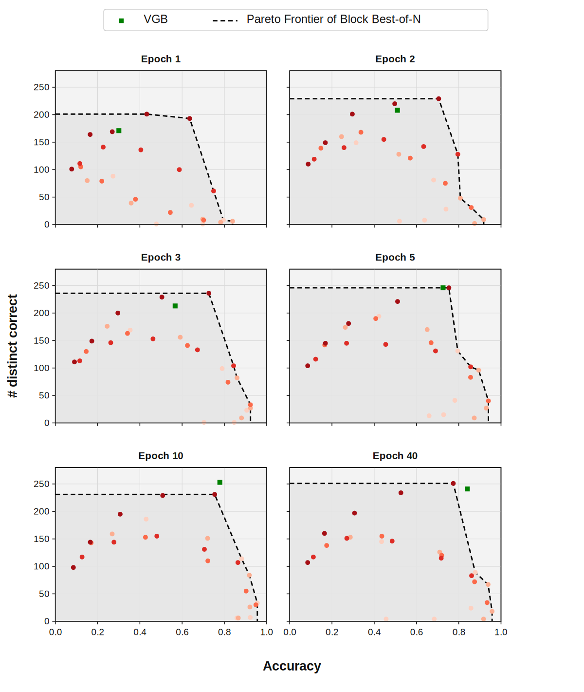
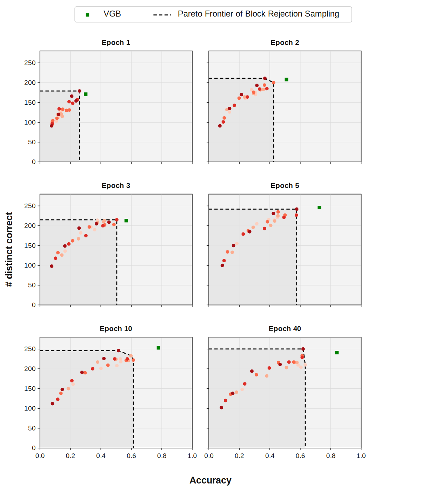
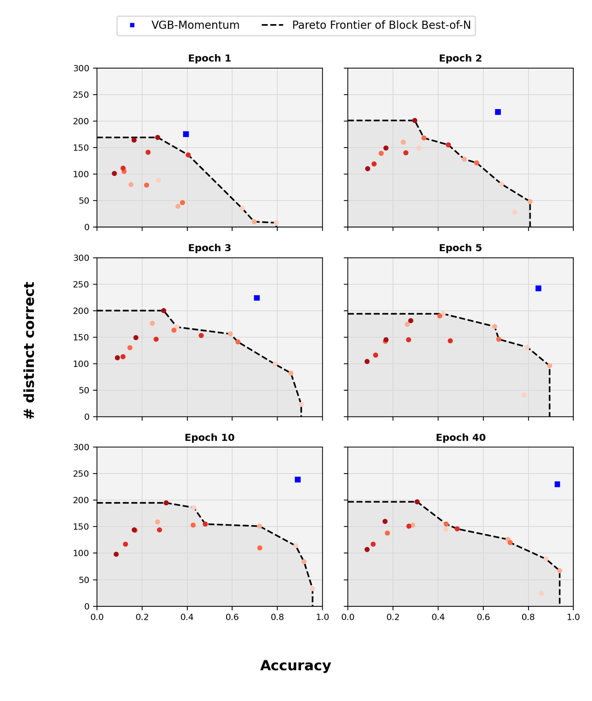
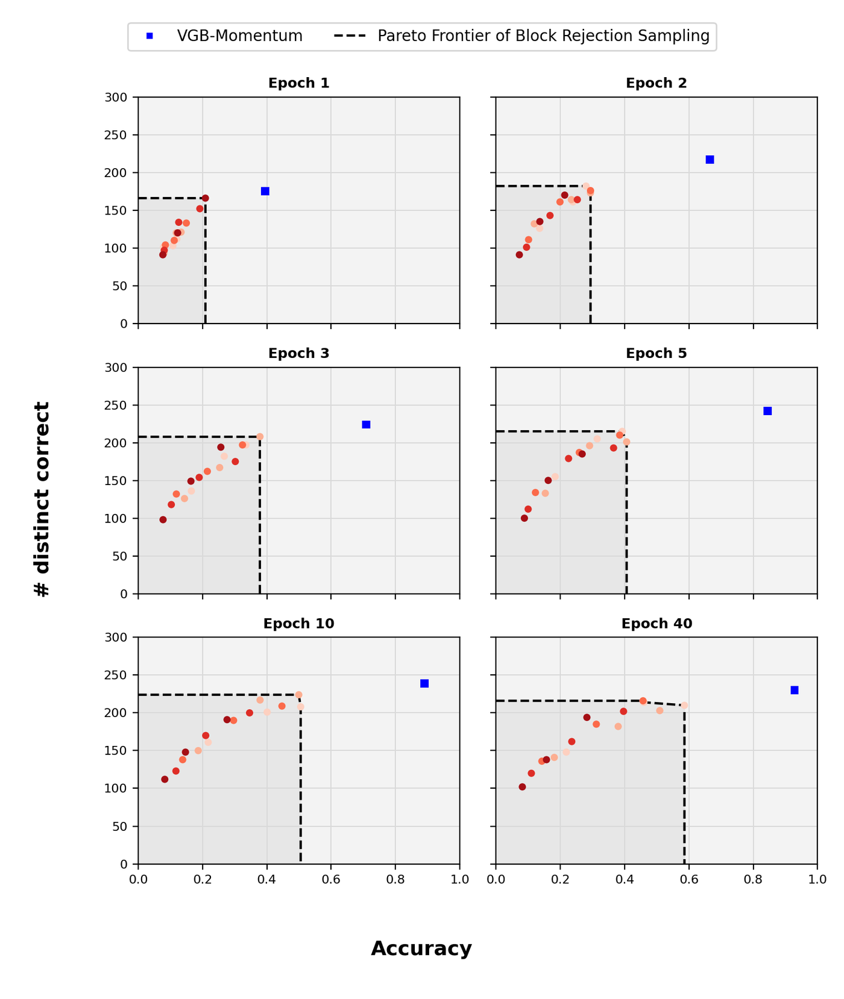
Figures 9–12: accuracy (x) and number of distinct correct completions (y) across value-function training epochs. Red circles are block-method configurations (darker = longer block); the dashed line is their Pareto frontier.
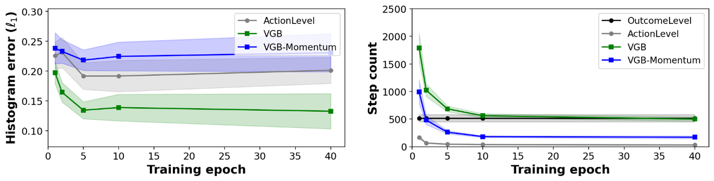
| Prefix | Average steps (↓) | Distributional error (↓) | ||
|---|---|---|---|---|
| πref | VGB | ActionLevelRS | VGB | |
| (((((()([(((())( | 181.276 | 406.896 | 0.043 | 0.047 |
| ((()((((((())[(( | 242.289 | 540.340 | 0.198 | 0.208 |
| ((((((((())((((( | 373.961 | 413.538 | 0.163 | 0.083 |
| (()(((()(((((((( | 374.020 | 438.736 | 0.152 | 0.076 |
| ((()(((((((()((( | 401.759 | 390.826 | 0.171 | 0.054 |
| ([()]((((([()(([ | 493.207 | 840.106 | 0.273 | 0.371 |
| ()((((((((((((() | 511.396 | 468.322 | 0.149 | 0.062 |
| ((([(((()[(((((( | 568.281 | 370.626 | 0.332 | 0.093 |
| ((((((([()(()(() | 616.394 | 572.806 | 0.257 | 0.276 |
| (((()((((()[(((( | 638.314 | 638.816 | 0.214 | 0.151 |
| ((((((((())(([() | 707.154 | 481.566 | 0.272 | 0.062 |
| ((((()((()((((([ | 1042.423 | 436.158 | 0.192 | 0.110 |
Table 3. Per-prefix results at epoch 40, sorted by πref's average steps to a correct generation. Bold marks the better value in each pair. VGB has lower distributional error than ActionLevelRS on 8 of 12 prefixes and needs fewer steps than πref on 6 of 12.
Analysis. In Figures 9–12 the VGB-based methods sit beyond the Block BoN and Block RS frontier, even against configurations that use as many or more reference-model calls. VGB gets a better accuracy–diversity trade-off at a comparable inference budget.
In Figure 13, VGB approximates the target distribution best, followed by ActionLevelRS and VGB-Momentum. VGB-Momentum's weaker fit may come from backtracking less often: backtracking is what lets VGB revise an earlier decision, and with less of it VGB-Momentum behaves more like the one-directional ActionLevelRS, which would explain their similar histogram errors.
VGB also takes more steps than the other methods because of its extra backtracking moves, so part of its better distributional fit may come from a larger effective compute budget. This leaves an open question: how much of the gain comes from backtracking itself, and how much from simply spending more computation?
4. Python test case generation In progress
Task. Generate a valid test case (an assertion) for a randomly named Python append-like function, following the prompt distribution of Botta et al. (2025). The base model is Qwen2.5-0.5B, whose ~150,000-token vocabulary is far too large to enumerate, so VGB uses the implicit rejection-sampling approximation (Algorithm 8) with 32 candidate tokens per step.
Setup. A single value network, unlike the per-position networks above, trained on pooled hidden states of the base model. VGB and ActionLevelRS are compared on three distributional metrics: length histogram, object-type histogram, and fraction of distinct generations.
Results and remaining implementation details, including how the function-name pool discrepancy was resolved, will be added here.
5. Letter avoidance Preliminary
Task. Generate a 32-token sentence that never contains the letter “e”. No value function is trained. The value is a fixed decay weight raised to the number of remaining tokens, times the binary reward, with the backtracking weight α varied between 0 and 1. α has no effect on ActionLevelRS, which reduces to standard locally constrained decoding, so this task isolates the benefit of backtracking with no confound from value-function quality.
Setup. Base model Qwen2.5-0.5B. Evaluated by GPT-4o-mini pairwise coherence win rate and Qwen2.5-1.5B normalized log-probability, across α ∈ {0.1, …, 0.5} and horizon ∈ {8, 16, 32}.
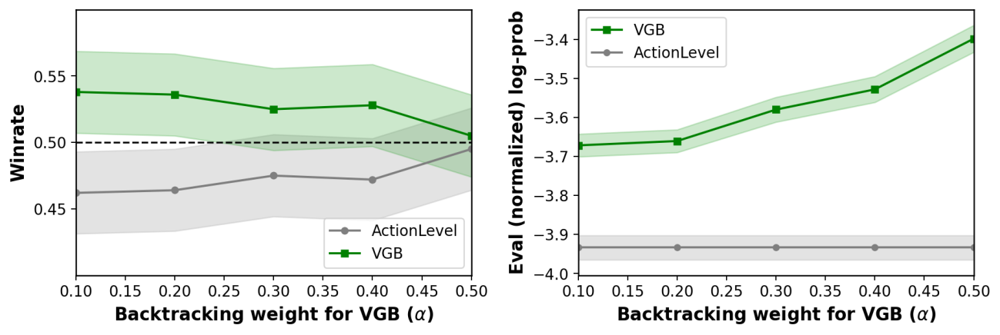
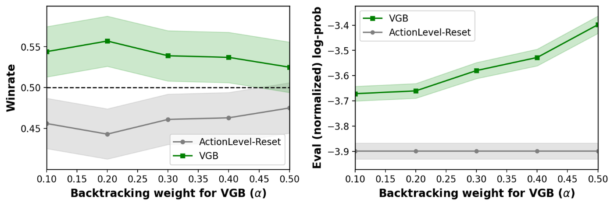
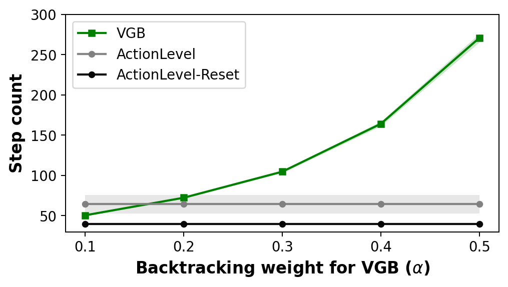
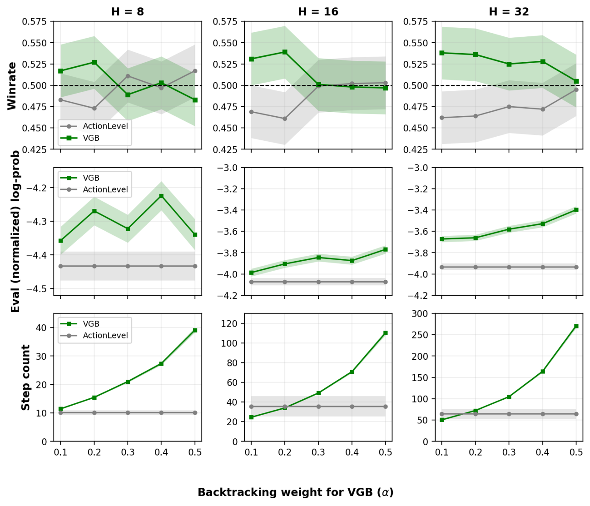
Analysis to follow, together with notes on win-rate aggregation and the choice between ActionLevelRS and ActionLevelRS-Reset as the restart heuristic.
Implementation approach
Because no code was released for the paper, the implementation falls into two parts.
Reused for task environments only. The Dyck grammar and Python test-case tasks follow the setup of Botta et al. (2025), which the VGB paper also builds on: data distributions, prompt format and reward parsing. This code provides the base model's training distribution and the reward function and contains no VGB-specific logic.
Implemented from the paper. The VGB random walk (small- and large-action-space versions), the ActionLevelRS and block-level baselines, and value-function training by Monte Carlo rollout regression were all written from the paper's algorithm boxes and appendix, without reference to the authors' code.
Other repositories consulted for adjacent tooling: kaiwenw/value-guided-search, ServiceNow/picard, yangkevin2/naacl-2021-fudge-controlled-generation.
References
- Rohatgi, D., Shetty, A., Saless, D., Li, Y., Moitra, A., Risteski, A., & Foster, D. J. “Taming Imperfect Process Verifiers: A Sampling Perspective on Backtracking.” arXiv:2510.03149, 2025.
- Botta, E., Li, Y., Mehta, A., Ash, J. T., Zhang, C., & Risteski, A. “On the Query Complexity of Verifier-Assisted Language Generation.” ICML 2025.
- Sinclair, A., & Jerrum, M. “Approximate Counting, Uniform Generation and Rapidly Mixing Markov Chains.” Information and Computation, 1989.